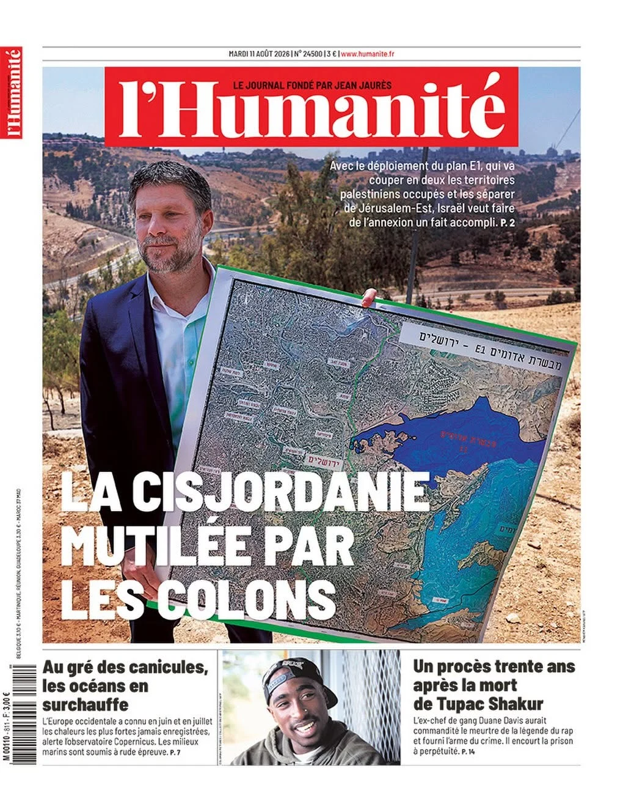

Publication relayée par le PCF 79
L’Humanité du 11 août, « La Cisjordanie mutilée par les colons »
Date de mise à jour indiquée par Facebook · 11 août 2026
Texte de la publication · L’Humanité
L’Humanité du 11 août - La Cisjordanie mutilée par les colons 📰
Repères éditoriaux
Nous avons relayé cette une de L’Humanité. Son titre donne le cadrage du journal sur la colonisation en Cisjordanie.

Sources
L’Humanité · publication relayée par le PCF 79 · fil Facebook · AR-0002-FB-00712
À lire aussi · Journée internationale de la paix. Le texte national dans le relevé